United Kingdom
15 restaurants · 104 photos
NZ/AU ?
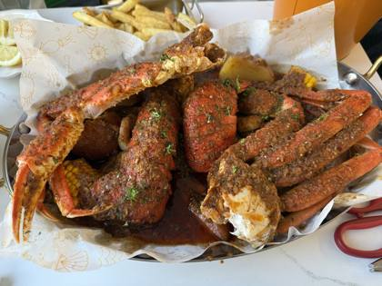
The Cajun BoilLondon, Bethnal Green · 18NZ/AU ?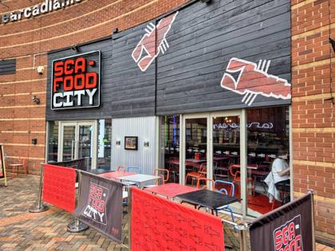
Seafood CityBirmingham · 14NZ/AU ?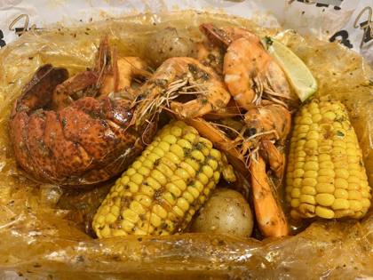
Hot n Juicy ShrimpLondon · 11No NZ/AU plan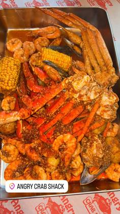
Angry Crab ShackLondon · 8NZ/AU ?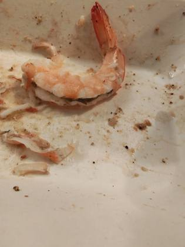
Fat CrabBattersea · 6NZ/AU ?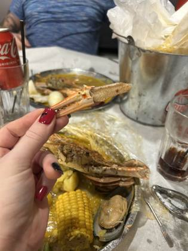
The Family CrabEnfield · 6NZ/AU ?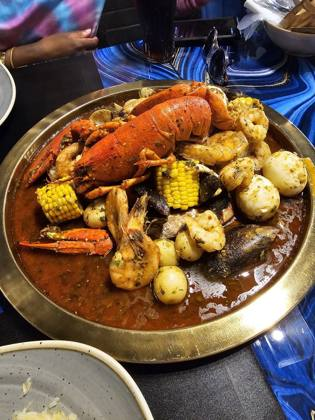
The Juicy CrabBirmingham · 6NZ/AU ?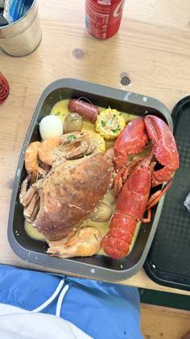
Alandco Seafood BoilPortsmouth · 6NZ/AU ?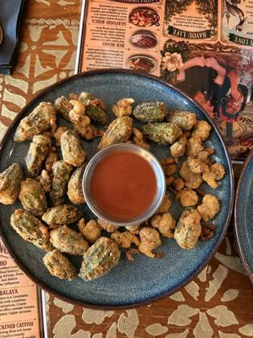
The Velvet CrabBrighton · 6NZ/AU ?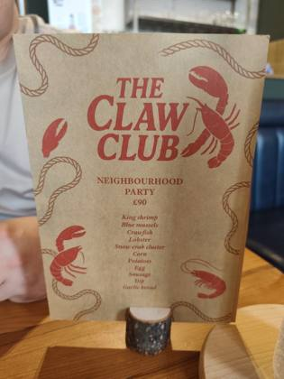
The claw clubWakefield · 6NZ/AU ?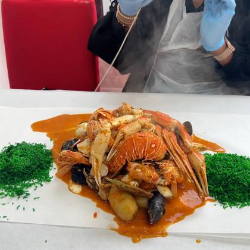
Chany s juicy seafood and moreNottingham · 6NZ/AU ?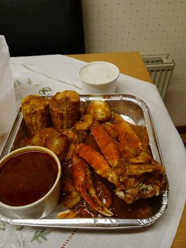
BOIL N BUTTERBelfast · 4NZ/AU ?Hottest CrabDoncaster · 3NZ/AU ?The Seafood Boil ClubSidcup · 2NZ/AU ?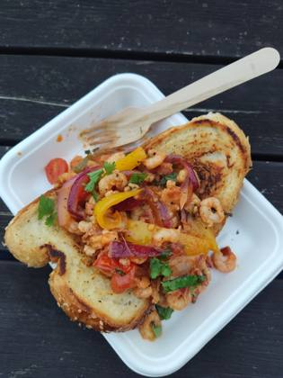
The Perfect Crab ShackBelvedere · 2Every boil listing found · 16
Google Maps listings whose name says boil / crawfish / Cajun / crab etc. Swept 20 Oct 2026. Not all verified as bag boils; tap to open the listing.
Acton · 1
- Tasty Crab Acton · ★5.0 (4)
Battersea · 1
- Fat Crab Battersea, 59 Lavender Hill · ★4.2 (474)
Belfast · 1
- BOIL N BUTTER Belfast, Blackstaff Mill, 81 Springfield Rd · ★4.7 (16)
Belvedere · 1
- The Perfect Crab Shack Belvedere, The Eardley Arms, 44 Woolwich Rd · ★5.0 (13)
Bethnal Green · 1
- The Cajun Boil Bethnal Green, 185 Bethnal Grn Rd · ★4.7 (340)
Birmingham · 1
- The Juicy Crab Birmingham Birmingham, 145 Barford St · ★4.2 (269)
Brighton · 1
- The Velvet Crab Brighton, 15 Madeira Pl · ★4.7 (90)
City of London · 1
- Angry Crab Shack - Borough Yards City of London, Arch 230, Borough Yards, Bank End · ★4.5 (666)
Enfield · 1
- The Family Crab Enfield, Unit 12, Cambridge Parade, Great Cambridge Rd · ★3.8 (327)
Hampton in Arden · 1
- Doch Seafood Boil (TEMPORARY CLOSED) Hampton in Arden · ★4.6 (18) · temporarily closed
London · 1
- Angry Crab Shack London, 19a Rupert St · ★4.5 (2,229)
Nottingham · 1
- Chany s juicy seafood and more Nottingham, 5 Radford Rd · ★4.5 (50)
Plymouth · 1
- The Mermaid Boil Plymouth · ★4.6 (11)
Portsmouth · 1
- Alandco Seafood Boil Portsmouth, 56 Middle St · ★4.8 (176)
Sidcup · 1
- The Seafood Boil Club Sidcup · ★5.0 (71)
Wakefield · 1
- The claw club Wakefield, 12 a, Bull Ring · ★4.5 (54)